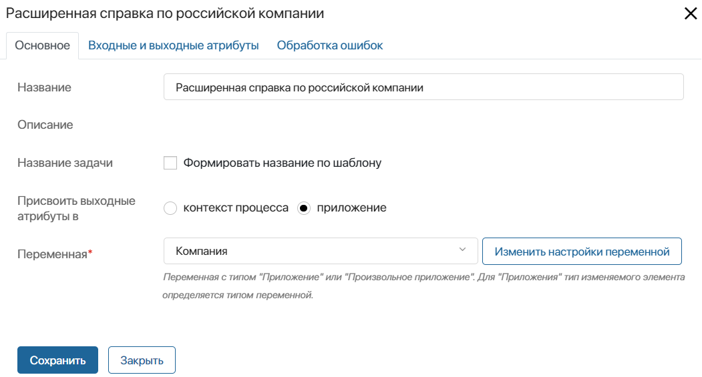
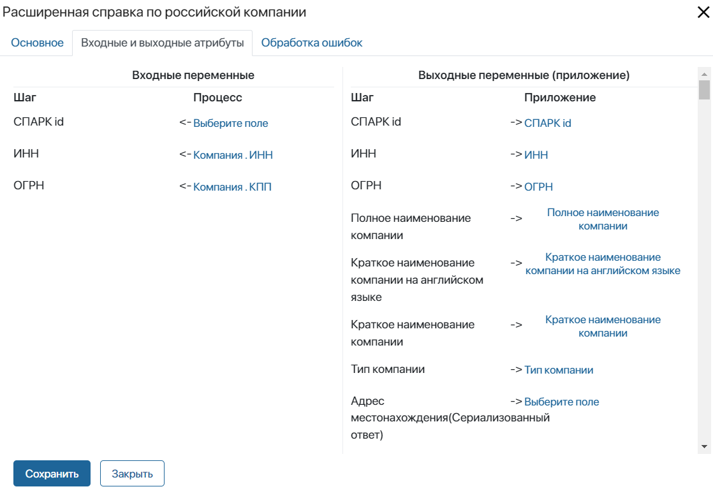
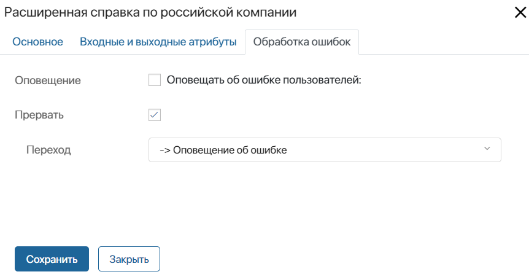

После установки решения Интеграция СПАРК в дизайнер бизнес-процессов добавятся специальные графические блоки, каждый из которых соответствует доступному запросу в сервис СПАРК. Блоки используются для отправки запросов в сервис.
Когда пользователю необходимо получить данные из базы сервиса, он может создать элемент в разделе СПАРК. После этого запускается бизнес-процесс, смоделированный на уровне раздела CRM > Приложение для БП интеграции СПАРК. На схеме процесса используется блок, соответствующий запросу. По его выполнении полученная информация показывается в добавленном элементе.
Вы можете настроить пользовательские бизнес-процессы, используя блоки, чтобы запрашивать данные по компаниям.
Например, в ходе процесса можно создавать компанию, автоматически отправлять запрос в сервис на получение расширенной справки, информации о совладельцах и структуре, а затем отображать данные в её карточке.
К графическим блокам модуля Интеграция СПАРК относятся:
- Включение мониторинга по компании;
- Выключение мониторинга по компании;
- Получение информации об актуальных совладельцах российской компании;
- Получение информации о структуре российской компании;
- Получение отчета СПАРК-Риски по российской компании PDF;
- Получение списка событий мониторинга по компании;
- Получение списка событий мониторинга по компаниям;
- Расширенная справка по российской компании.
Подробнее о данных, которые вы можете получить с помощью блоков, читайте в статье «Типы запросов в сервис СПАРК».
Настройка процесса с блоками решения «Интеграция СПАРК»
Блоки решения настраиваются одинаковым образом. Чтобы запрос в сервис обрабатывался корректно, в настройках блока необходимо сопоставить:
- входные атрибуты — данные об определённом контрагенте;
- выходные атрибуты — свойства, в которые будет записан результат поиска данных по базе сервиса СПАРК.
Переменные для сопоставления с входными и выходными атрибутами блока создаются перед началом его настройки:
- в контексте процесса — данные из СПАРК можно отображать в процессных задачах;
- в контексте приложения — информацию из СПАРК можно показывать в карточке элемента. Чтобы добавить в процесс переменные приложения, в настройках процесса создаётся свойство типа Приложение, ссылающееся на него.
Переменные, необходимые для настройки каждого блока, описаны в статье «Входные и выходные атрибуты блоков решения „Интеграция СПАРК“».
Подробнее о сопоставлении контекста процесса при настройке графических элементов такого типа читайте в статье «Биндинг и другие аспекты действий в бизнес-процессах».
Настройки блока из решения «Интеграция СПАРК»
После выполнения предварительных настроек процесса и добавления необходимых переменных в его контекст вы можете перейти к размещению графического блока на схеме.
Для этого на странице процесса на правой панели инструментов перейдите на вкладку Интеграции. Перетащите на схему блок с названием, соответствующим выбранному вам запросу, например, Расширенная справка по российской компании. Разместите блок там, где в ходе процесса потребуется получить данные по контрагенту.
Дважды нажмите на добавленный блок на схеме процесса. Настройки выполняются на трёх вкладках: Основное, Входные и выходные атрибуты, Обработка ошибок.
Вкладка «Основное»
На вкладке Основное указывается общая информация о запросе в сервис.

- Название — введите название блока, которое будет отображаться на схеме процесса;
- Описание — краткая информация о действиях, выполняемых в блоке, указывается при создании графического элемента в модуле. Для блоков модуля Интеграция СПАРК описание отсутствует;
- Название задачи — выберите опцию Формировать название по шаблону, чтобы включить контекстные переменные в название, которое исполнитель увидит в списке задач и в карточке задачи. В правом углу поля Шаблон* нажмите на значок {+} и выберите переменную. В шаблон можно добавить также дату и время с помощью функции DateTime(). Для этого нажмите на значок f(x);
- Присвоить выходные атрибуты в — укажите, в каком контексте созданы переменные, которые будут указываться на вкладке Входные и Выходные атрибуты:
- контекст процесса — отметьте эту опцию, если вы создали переменные, в которых отобразится результат работы блока, в контексте процесса;
- приложение — выберите опцию, а затем в поле Переменная* укажите название приложения, добавленного в контекст процесса, в поля которого будет записан результат работы блока.
Вкладка «Входные и выходные атрибуты»
На этой вкладке поля настроек блока сопоставляются с контекстными переменными процесса или приложения. Во входные атрибуты передаётся информация о компании, в выходные — записываются данные из сервиса, полученные в результате выполнения блока. Сопоставляемая переменная должна совпадать по типу с атрибутом блока.
Подробнее о переменных, которые должны присутствовать в процессе для настройки каждого из блоков читайте в статье «Входные и Выходные атрибуты графических элементов модуля „Интеграция СПАРК“».

Вкладка «Обработка ошибок»
На этой вкладке необходимо указать, по какой ветке направится ход бизнес-процесса при возникновении ошибки в работе блока. Также вы можете настроить оповещение пользователей об ошибке.

- Оповещение — включите опцию, а затем укажите пользователей, которым будет отправляться оповещение об ошибке в процессе. Выбрать можно пользователя, группу пользователей, элемент оргструктуры или указать контекстную переменную, например, инициатора процесса;
- Прервать — отметьте опцию, а затем в поле Переход укажите, по какой ветке направится процесс в случае возникновения ошибки. Указанный в этих настройках переход будет отмечен на схеме процесса значком
 .
.
После того как все настройки блока завершены, нажмите кнопку Сохранить.